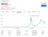

Keywords in Startups Pitch or SPAC Decks

This paragraph of the article of Marina Krakovsky just highlights an opportunity for a data-driven startup product to use one of the buzz keywords of startup founders. Sincerely was trying hard to publish this other article about the reading experience in Medium according to how the UI and UX were built but got interrupted by this computer running the insider program of windows 10 that just keep crashing as It was telling also that it has some problem also like what I was writing. Still trying to fix this issue or bug of the insider program of windows that just stop the explorer process and refreshes the whole screen every minute or so. Jumped on my mac in order to finish this article about RX, UX, and UI, while looking for the medium’s article that were planned as an illustration for the article I saw that I could read this article from Marina. I know her and had consumed her blog and read the long tail book of Chris Anderson. Loosed the seconds I was trying to write about and went to this paragraph.
once consumed the paragraph highlighted a product opportunity which is processing all startup's pitch deck and do some keywords analysis. This could provide clear insights to venture angel investors and can tell what are the buzzing tech words.
If you also like you can process SPAC decks of startups going public through this form of IPO.
Notice that SPAC is also a buzzed word.
But it seems to lose momentum.
Here is the momentum for Gamestop now
